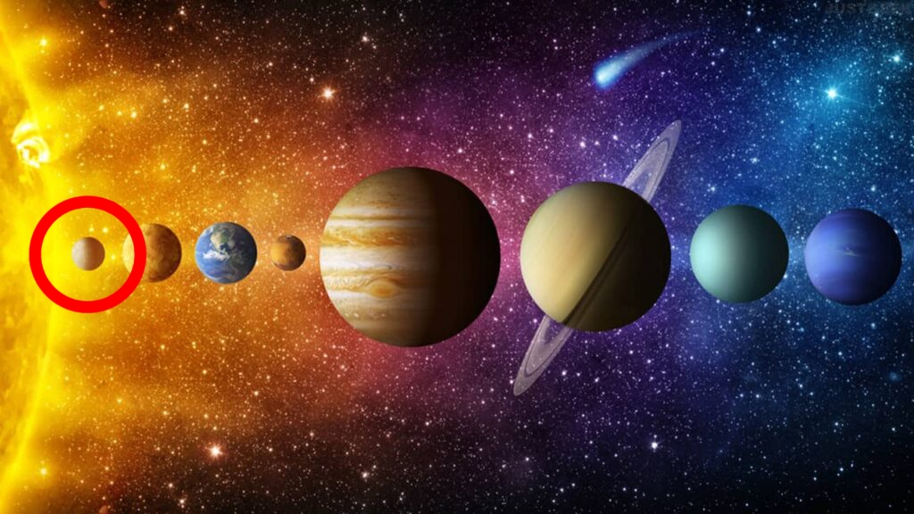

Mercure
Mercure est la plus petite planète.
C'est aussi la plus proche du Soleil, ce qui la rend difficile à voir dans le ciel,
excepté au lever et au coucher de l'astre solaire quand celui-ci ne la masque pas par son éclat.
Mercure n'a pas de lune et elle est trop petite pour retenir une atmosphère.
| Mercure |
 |
Fiche d'identité
- Distance moyenne au Soleil : 58 millions de km
- Température de surface : -180 °C à 430 °C
- Diamètre : 4875 km
- Durée du jour : 59 jours terrestres
- Durée de l'année : 88 jours terrestres
- Nombre de lunes : 0
- Gravité de surface : (Terre = 1) 0,38
|
Un petit monde
La Terre pourrait contenir 18 planètes comme Mercure.
Pourtant, Mercure est plus dense que toutes les autres planètes hormis la nôtre.
Cela serait dû à un très gros noyau de fer et de nickel.
Celui-ci produit un champ magnétique 100 fois plus faible que celui de la Terre, ce qui s'expliquerait par le fait que la rotation de Mercure est beaucoup plus lente.
Bassins d'impact géants
Comme la Lune, Mercure est couverte de cratères.
Ceux-ci témoignent des millions d'impacts d'astéroïdes et de météorites que la planète a subis depuis sa formation.
Certains ont creusé d'énormes dépressions en surface. La plus célèbre est le bassin Caloris, mesurant environ 1 300 km de diamètre.
Des montagnes s'élèvent sur ses bordures, dominant le fond sillonné de crêtes et de fractures.
L'explosion qui a engendré Caloris semble avoir propagé des ondes de choc à travers la planète.
Celles-ci ont produit sur la face opposée un vaste chaos de collines.

Lien vers la page dédié au Système Solaire
Lien vers la page d'acceuil